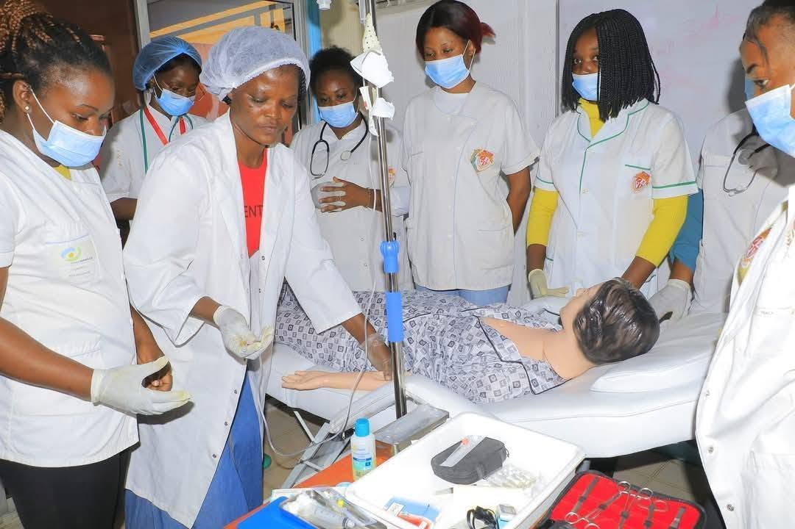

Des parcours progressifs
Un choix de niveau et de formation à préciser selon le diplôme antérieur et le projet de l’apprenant.
SCIPT INTERNATIONAL réunit des parcours universitaires et des formations professionnelles pour accompagner les projets d’études, de spécialisation et d’évolution de carrière.
SCIPT INTERNATIONAL, Special Center for International and Professional Training, est un établissement de formation professionnelle et universitaire installé à Libreville, au Gabon. Créé en 2020, il propose des formations de niveau professionnel, des cursus universitaires de Licence et de Master, et des parcours doctoraux, dans une démarche d’ouverture internationale et d’ancrage dans les réalités du continent africain.
L’établissement s’organise en deux programmes distincts. SCIPT INTERNATIONAL UNIVERSITY conduit aux diplômes universitaires, dans le cadre du système Licence, Master, Doctorat. SCIPT INTERNATIONAL ACADEMY propose des formations professionnelles, orientées vers les gestes de métier et les compétences immédiatement mobilisables. Quatre écoles thématiques, l’École de Droit, de Gestion et d’Administration, l’École des Sciences, Technologies et d’Ingénierie, l’École des Sciences de la Santé et du Développement et l’École des Sciences Humaines, Sociales et de la Communication, ainsi que l’École Doctorale Internationale, composent l’offre.
SCIPT INTERNATIONAL exerce sous un agrément délivré par l’État gabonais et applique un système de management de la qualité certifié. Il accueille des étudiants de plusieurs pays et collabore avec un réseau d’universités et de centres de formation partenaires à l’étranger.
Repères institutionnels · 2020–2026
SCIPT INTERNATIONAL propose deux programmes distincts. SCIPT INTERNATIONAL UNIVERSITY conduit aux diplômes universitaires : Licence, Master, Doctorat. SCIPT INTERNATIONAL ACADEMY propose des formations professionnelles, plus courtes et plus pratiques, qui ne sont pas des diplômes universitaires. L’établissement s’organise en quatre écoles thématiques, l’ESGA-SCIPT, l’ESTI-SCIPT, l’ESSA-SCIPT et l’ESHC-SCIPT, auxquelles s’ajoute l’École Doctorale Internationale, l’EDI-SCIPT. Chacune est présentée dans la partie suivante.
La mission de SCIPT INTERNATIONAL est de rendre accessible une éducation de qualité, ouverte à l’innovation et attentive aux compétences utiles dans la vie professionnelle.
Notre vision est de faire dialoguer enseignement supérieur, formation aux métiers et collaborations internationales. Chaque apprenant peut ainsi construire un parcours cohérent avec son niveau, ses ambitions et ses perspectives.
Relier les savoirs aux situations concrètes, accompagner les choix d’orientation et donner à chacun les moyens de progresser.
Notre mission. Offrir une éducation de qualité internationale, accessible et innovante, qui forme des professionnels compétents, responsables et capables de relever les défis du monde contemporain. Cette mission se décline en cinq engagements : former, favoriser l’ouverture internationale, promouvoir la recherche et l’entrepreneuriat, accompagner chaque apprenant et servir la société.
Notre vision. Être un centre d’excellence international de référence en formation et en recherche, reconnu pour la qualité de ses enseignements, la pertinence de ses diplômes et son impact positif sur le développement durable des sociétés.
Excellence académique. Viser l’excellence dans tout ce que font les enseignants et les étudiants.
Intégrité. Respecter les règles, les personnes et la vérité.
Innovation. Encourager la créativité, la recherche et l’innovation comme moteurs de progrès.
Impact. Agir avec responsabilité pour un avenir meilleur et plus durable.
Le site institutionnel décrit une pédagogie modulaire qui associe cours, mise en pratique, stages et projets selon les programmes. L’objectif est que les acquis puissent être mobilisés dans un contexte réel.
Un choix de niveau et de formation à préciser selon le diplôme antérieur et le projet de l’apprenant.
Des activités et projets orientés vers l’application des connaissances, selon la filière suivie.
Des échanges avec l’équipe pour comprendre les admissions, les modalités d’études et les perspectives du parcours.
Choisissez d’abord votre voie, puis découvrez les écoles et les formations qui y sont rattachées.
Des niveaux d’études et des domaines de recherche organisés autour de cinq écoles.
Explorer les écoles →Des formations pratiques rattachées à trois écoles : droit et gestion, sciences et technique, santé et développement.
Explorer les formations →Dans sa présentation institutionnelle, le fondateur défend des programmes modulaires, une place importante accordée à la pratique et un accompagnement adapté aux projets des étudiants.
Cette ambition s’appuie sur des enseignants et professionnels de différents domaines, ainsi que sur une ouverture aux partenariats académiques et aux expériences internationales.
Faire de la régularité et de l’engagement des moteurs de progression.
Viser une maîtrise approfondie des connaissances et des gestes professionnels.
Avancer vers un objectif d’études ou de métier clairement défini.
Notre équipe peut vous aider à choisir une école, comprendre les conditions d’accès et obtenir les informations financières validées pour votre formation.
Choisissez votre parcours, échangez avec notre équipe et préparez votre candidature.
